PaaS y Observabilidad
Tópicos Avanzados de Programación

Tenemos una app desarrollada
Y ahora?
En esta clase:
- Cómo llevarla a producción en infra moderna.
- Cómo monitorear y entender si está andando (o no).
Deploys
Llevar código a producción.
La forma más básica de deployar usando containers y Docker Compose a mano:
# en nuestra máquina de desarrollo, con el nuevo código,
# buildeamos una nueva imagen de docker
docker build -t mi-web .
# y la guardamos en un archivo
docker save mi-web > mi-web-v3.tar
# subimos la imagen a nuestro servidor
scp mi-web-v3.tar mi-servidor:/tmp
# nos conectamos por SSH al servidor y cargamos la imagen
ssh mi-servidor
docker load < /tmp/mi-web-v3.tar
# y recreamos/reiniciamos los containers de nuestra web,
# para que usen la nueva imagen
docker-compose down
docker-compose up -d
Funciona! Y para un proyecto chico alcanza. Peeero...
❌ Seguro va a haber más pasos. Hay que tenerlos documentados, y no equivocarse al correrlos un viernes a las 18hs.
❌ N servidores o servicios → N veces más propenso a errores.
❌ Sin tests ni chequeos antes de deployar.
❌ Dependemos de una persona haciendo cosas a mano. No CD.
❌ Si algo sale mal, cómo volvemos atrás?

Cuando vimos CI/CD dijimos que el deploy podía ser un paso más de un pipeline automatizado.
Cómo sería ese pipeline?
Pipeline de deploy típico, cuando algo se mergea a main:
- Baja el código.
- Corre tests y chequeos.
- Construye la imagen de Docker.
- La sube a un registry (repo de imágenes, ej: Docker Hub, GitHub Container Registry).
- Avisa a la infra que use la nueva imagen.
Cómo definimos ese pipeline? Dónde se programa?
Definido en un archivo en el repo, lo ejecuta un servicio de CI/CD (GitHub Actions, GitLab CI, etc). Ej:
on:
push:
branches: [main]
env:
IMG: registry.com/app:${{ github.sha }}
jobs:
deploy:
runs-on: ubuntu-latest
steps:
- uses: actions/checkout@v4
- run: uv run pytest
- run: docker build -t $IMG .
- run: docker push $IMG
- run: ./deploy.sh $IMG
Qué hace el "deploy.sh"?
- Podría por ssh decirle al servidor que haga docker compose down/up.
- O en infra moderna: la infra tiene API a la que le podemos pegar para pedir "empezá a usar esta nueva imagen para el servicio X".
Tag de la imagen == hash del commit.
- Cada imagen nos dice exactamente qué versión de código tiene adentro.
- Sabemos qué versión está corriendo en dev/stag/prod.
- ✅ Rollback fácil: si la versión nueva está rota, deployamos la imagen anterior.

Cómo reemplazamos la versión vieja por la nueva, sin que los usuarios lo noten?
Con N nodos corriendo, tenemos opciones...
Rolling update: reemplazar nodos de a uno (o de a pocos).
✅ El más común, por defecto en la mayoría de los orquestadores.
✅ Sin downtime: siempre tenemos nodos vivos para que el load balancer use.
❌ Durante un rato conviven dos versiones distintas de la app.
(Los canary releases que vimos hace poco son una variante de esto)
Blue/green: levantar la versión nueva completa al lado de la vieja, y cambiar todo el tráfico de golpe.
✅ Nunca conviven versiones, volver atrás es cambiar el tráfico de vuelta.
❌ Requiere el doble de infra (por un rato).

Ojo con la base de datos!
- Es fácil revertir código. Datos? no tanto!
- Si la versión nueva cambia el esquema de la DB, no es trivial el rolling deploy o volver a atrás un blue/green.
- Se suele resolver haciendo varios releases chicos encadenados.
- Algunos frameworks tienen migraciones revertibles (ej: Django).

Configuración y secretos
La misma imagen Docker va a correr en dev, staging y prod.
...pero en cada entorno va a tener valores diferentes para cosas como config de la DB (diferentes por entorno), API keys, etc.
Cómo lo resolvemos?
Lo que cambia entre entornos no va dentro de la imagen ni en el repo.
Se pasa desde afuera, normalmente con variables de entorno.
Nuestro código espera poder obtener los valores desde variables de entorno:
# ejemplo en python
import os
db = DataBase.connect(
host=os.environ["DB_HOST"],
password=os.environ["DB_PASSWORD"],
)
...
Suele ser común tener valores por default, que son los que usamos al correr localmente en desarrollo:
# ejemplo en python
import os
db = DataBase.connect(
host=os.environ.get("DB_HOST", "localhost"),
password=os.environ.get("DB_PASSWORD", "1234"),
)
...
Y al correr en los otros entornos, le pasamos los valores para las variables al contenedor:
# una por una a mano
docker run -e DB_HOST=prod.db.com -e DB_PASSWORD=5678 mi-web
# o mejor, desde un archivo
docker run --env-file .env mi-web
Dónde guardamos el archivo con los secretos?
En el repo?
❌ NUNCA!! Es muy peligroso!
En el servidor + backup en otro lado?
Puede ser, aunque se complica cuando son N servidores, N entornos, N servicios, etc.
Muchos env files → alto riesgo de hacer algo mal.
💡 Un gestor de secretos es todavía mejor:
Desde una web cargamos y editamos secretos, y luego nos da una utilidad para setear variables de entorno con esos secretos!
# ejemplo con doppler, con secretos guardados en un
# proyecto llamado "secretos-mi-web", usando el entorno
# "prod"
doppler run -p secretos-mi-web -c prod -- python mi_web.py
Con un gestor de secretos:
✅ Nadie tiene los secretos de prod guardados en su máquina.
✅ Permisos por persona y entorno, historial de cambios, y rotar un secreto es cambiarlo en un solo lugar.
Ej: Doppler, Vault, o el propio del PaaS.
IaC
Infraestructura como código
Nuestro código ya se deploya solo. Pero de dónde salen las máquinas, las DBs, las redes, etc donde todo corre? Quién configura la infraestructura?
La forma "fácil": entrar a la consola web del proveedor de infra y hacer click, click, click...
Infra creada a mano:
❌ Imposible de reproducir: cómo armamos un staging idéntico a prod?
❌ Nadie sabe qué está configurado y por qué. Y cuando alguien cambia algo a mano, nadie se entera.
❌ Sin historial, sin reviews, sin rollback.
❌ Si se pierde todo (un error, un ataque...), armarlo de nuevo es empezar de cero.

💡 Infraestructura como código: describir la infra con archivos en un repo.
- Viven en git: versionados, commits explicando motivos, etc.
- Cambios vía PRs, con reviews.
- Una herramienta se encarga de aplicarlos a la infra real.
Suelen ser declarativos: no decimos qué pasos hacer, sino qué esperamos que haya en la infra.
resource "aws_instance" "web" {
count = 1
instance_type = "t3.small"
ami = "ami-0abc123"
}
resource "aws_db_instance" "db" {
engine = "postgres"
instance_class = "db.t3.medium"
# (simplificado, faltan datos)
}
Ej: Terraform / OpenTofu.
La herramienta compara lo que describimos con lo que existe en la infra, y calcula la diferencia.
# aplicamos los cambios
> terraform apply
Plan: 1 to add, 0 to change, 0 to destroy.
Do you want to perform these actions?
Enter a value: yes
aws_instance.web[0]: Creating...
aws_instance.web[0]: Creation complete after 23s [id=i-0f9e8d7c]
Apply complete! Resources: 1 added, 0 changed, 0 destroyed.
Queremos agrandar la instancia de una VM? Editamos el archivo (PR, review, etc), y luego corremos el apply.
✅ Reproducible: crear nuevos entornos (o recuperarlos) es super fácil.
✅ Reviews, historial y rollback, infra versionada.
✅ Nos queda documentación (commits) de por qué hicimos cada cambio.
❌ Hay que aprender la herramienta y evitar la tentación de tocar la infra a mano.
Otras herramientas y variantes:
- Pulumi: lo mismo, pero escribiendo código en Python, TypeScript, etc.
- CloudFormation, Bicep: las propias de AWS y Azure (GCP ahora usa Terraform).
PaaS
Platform as a Service.
Hasta ahora: nosotros armamos los deploys, la infra, el orquestador, los balanceadores, los certificados...
Es mucho trabajo! Es necesario siempre?
Y si otro se encarga de todo eso, y nosotros solo nos enfocamos en la app?
Hay "niveles" de cuánto nos ocupamos nosotros:
- Infra local: Hacemos todo, hasta conectar el cable de red al servidor.
- IaaS (Infrastructure as a Service): nos dan máquinas virtuales, redes, discos. El resto lo hacemos nosotros.
Ej: AWS EC2, DigitalOcean, Google Compute Engine. - PaaS (Platform as a Service): nos dan una plataforma donde subimos nuestra app, y se ocupan de todo lo necesario para correrla.
Ej: Heroku, Render, Fly.io, Railway, Google Cloud Run.
Cuanto más control cedemos, menos flexibilidad y más costo de infra vamos a pagar, pero menos trabajo vamos a necesitar.
Qué hace un PaaS por nosotros?
- Construir y deployar la app cada vez que le pasamos código nuevo.
- Correrla en contenedores, y reiniciarlos si se caen.
- Balancear carga y escalar (a mano o automáticamente).
- HTTPS, certificados, DNS.
- Rollbacks, logs, métricas básicas.
En la práctica, deployar una versión nueva en un PaaS es re simple:
# Fly.io
fly deploy
# Heroku
git push heroku main
O ni eso: conectamos el repo y cada merge a main se deploya solo (ej: Render).
Qué le tenemos que dar?
- Nuestra app (código o imagen).
- Cómo se corre (el comando).
- Variables de entorno y secretos.
- Cuántos nodos, o reglas de auto scaling.
Bastante parecido a lo que le describíamos a un orquestador, pero sin tener que administrarlo.

Servicios típicos
Nuestra app casi nunca es solo la app.
Los PaaS y las nubes grandes (AWS, Google Cloud, Azure) ofrecen servicios administrados de todo lo que suele acompañar a una app:
- Bases de datos (ej: Postgres, MySQL).
- Caché y sesiones (ej: Redis).
- Colas de tareas y mensajes.
- Almacenamiento de archivos/blobs (ej: S3).
- CDN, DNS, certificados.
- Tareas programadas (cron jobs) y workers.
- Y muchísimo más, las grandes tienen cientos de servicios...
Ej: una DB administrada.
✅ Backups automáticos, actualizaciones, réplicas y failover, monitoreo.
✅ Nos ahorra la parte más difícil de escalar y de mantener (la DB, se acuerdan?).
❌ Es más cara que correr nosotros lo mismo en una VM.
❌ Tenemos menos control sobre configuraciones avanzadas.
Ojo con el Vendor lock-in:
Cuanto más usamos servicios propios de un proveedor, más difícil es irnos.
✅ Contrarrestamos: app en contenedores, servicios estándar (Postgres, Redis en vez de versiones propietarias), y la infra descripta como código.
Casi siempre vale la pena por la facilidad cuando somos chicos, pateando para adelante el posible problema de "cambiar/salirnos de este proveedor".
Entonces, dónde conviene correr nuestra app?
- PaaS: casi siempre buen punto de partida (salir rápido al mercado), pero caro y rígido cuando crecemos.
- IaaS + contenedores/orquestadores (ej: Kubernetes en una nube): cuando necesitamos más control, o el costo del PaaS ya no cierra.
- Infra propia física: casos muy específicos (regulaciones, escala enorme, hardware particular, o empresa/infra legacy).
Se puede empezar en uno y migrar después!
$
Y ojo con la factura: casi todo se cobra por uso. Configuren alertas+límites de presupuesto desde el día uno!

Demo
Deployando una app en un PaaS real (Render).
Observabilidad
La app está deployada. Cómo sabemos si anda bien?
Producción no es nuestra máquina:
❌ No podemos poner breakpoints ni imprimir cosas y mirar la terminal.
❌ Hay muchos nodos, efímeros, que aparecen y desaparecen.
❌ Los problemas dependen de datos y tráfico reales, difíciles de reproducir localmente.
Si no miramos nosotros, nos enteramos por los usuarios: "no me anda la app" 😱.
Observabilidad: poder entender qué está pasando dentro de nuestro sistema, mirando las cosas que reporta.
Tenemos que preparar el sistema para eso, no es gratis ni sale "solo instalando algo".
Hay tres tipos de información a recolectar:
- Logs.
- Métricas (con sus dashboards y alertas).
- Traces.

Logging
Un registro de lo que va pasando.
Un log es una línea de texto que la app escribe cada vez que pasa algo interesante.
2026-09-21 14:05:12 INFO Pedido 4521 creado por usuario 87
2026-09-21 14:05:13 WARN Pago del pedido 4521 tardó 4.2s
2026-09-21 14:05:15 ERROR Falló envío de mail del pedido 4521
Cada uno tiene un nivel: indica su importancia.
Niveles típicos:
- CRITICAL: el sistema entero está en peligro.
- ERROR: algo falló.
- WARNING: algo raro, pero seguimos andando.
- INFO: cosas normales importantes (un pedido creado, un deploy, etc).
- DEBUG: data para debuguear localmente que no queremos loguear en prod.
Con eso podemos elegir cuánto ver: en prod, por ejemplo, desde INFO para arriba.
Buenas prácticas:
- Usar la librería de logging del lenguaje, no
prints: da niveles y formato. - Escribir a la salida estándar (stdout): en contenedores es lo esperado, y la plataforma se encarga de recolectarlo.
- Loguear con contexto: ids de request, de usuario, de pedido. "Falló algo" no sirve para nada.
- ❌ Nunca loguear passwords, tokens, tarjetas ni datos personales innecesarios (privacidad!).
- Ni pocos ni demasiados: sin logs estamos ciegos, con demasiados el ruido ahoga la info útil.
Con muchos nodos efímeros, dónde miramos los logs?
❌ Si un contenedor muere, sus logs desaparecen.
❌ Conectarse a cada nodo para leer archivos no escala.
✅ Logs centralizados: todos los nodos los mandan a un sistema que los guarda y permite buscar.
Herramientas típicas:
- Las que ya trae el PaaS o la nube (ej: CloudWatch, Cloud Logging). Lo más simple para empezar.
- Grafana Loki, ELK/OpenSearch (basado en Elasticsearch), y otros que podemos instalar y correr en nuestra infra.
- Servicios pagos: Datadog, Better Stack, etc.
Cuánto tiempo guardamos los logs?
Es una decisión de costo vs necesidad (y a veces legal).
Demo
Mirando los logs de la app que deployamos hace un ratito.
Los errores merecen un tratamiento especial.
Hay herramientas de error tracking (ej: Sentry): capturan las excepciones no manejadas y las agrupan.
- Stack trace completo, versión del código, datos del usuario y de la request.
- "Este error pasó 340 veces, a 12 usuarios, desde el último deploy".
- Avisan cuando aparece un error nuevo.
Fáciles de integrar, y valiosas desde el día uno.
Métricas
Medir el comportamiento de la app.
Los logs cuentan qué pasó. Las métricas miden cuánto.
Son valores numéricos guardados con su timestamp, formando una serie de tiempo.
Qué se mide?
- Del sistema: CPU, RAM, disco, red...
- De la app: requests por segundo, latencia, errores, largo de la cola de tareas, conexiones a la DB...
- De negocio: posts por hora, pedidos, pagos fallidos...
No podemos ver lo mismo con los logs?
Sí, peeeero...
✅ Son mucho más baratas: guardan números agregados, no cada evento.
✅ Son mucho más fáciles de consultar y graficar → más fácil entender estado, diagnosticar problemas, etc.
✅ Es más fácil crear alertas con sus valores.
Tiempo promedio de respuesta: 200ms. Todo bien?
Puede ser que el 99% responda en 50ms, y el 1% en 15 segundos. El promedio esconde casos malos.
✅ Mirar percentiles: p50 (lo típico), p95, p99 (los peores casos).
"p99 = 2s" significa que el 99% de las requests tardó 2s o menos.
Cómo llegan las métricas a un sistema central? Dos opciones:
- Una url en la app las expone (ej:
/metrics) y una herramienta las consulta cada tanto: Prometheus. - O las recolectamos y enviamos desde la app hacia la herramienta, usando su lib (ej:
dd.send_metric("queue_size", 4)): Datadog, CloudWatch, etc.
Los PaaS y las nubes ya reportan las básicas (CPU, RAM, requests) sin hacer nada.

Dashboards
Ver la salud del sistema de un vistazo.
Un dashboard es una pantalla con gráficos de métricas (y a veces logs), que se actualiza en tiempo real.
Herramientas típicas: Grafana (la más usada, con muchas fuentes), y los dashboards de Datadog, CloudWatch, etc.
Un buen dashboard:
- Responde "está todo bien?" en segundos.
- Tiene pocos gráficos claros, no 80 que nadie entiende.
- Permite filtrar, elegir rango de fechas, etc (ej: "quiero ver la RAM de ayer en dev").
Los dashboards sirven para mirar, pero nadie va a estar mirando las 24hs.
Si algo está roto, necesitamos que el sistema nos avise solo...
Alertas
Por favor no a las 3am...
Una alerta es una regla sobre una métrica: si se cumple durante un tiempo, se manda una notificación.
- alert: MuchosErrores
expr: |
sum(rate(http_requests_total{status=~"5.."}[5m]))
/ sum(rate(http_requests_total[5m])) > 0.05
for: 5m
annotations:
summary: "Más del 5% de las requests dan error"
(Ej: Prometheus. Casi todas las herramientas permiten reglas parecidas.)
Alertar sobre síntomas (lo que sufren los usuarios), no sobre causas.
❌ "CPU al 90%": puede estar perfecto, o no. No sabemos si es un problema.
✅ "5% de errores" o "latencia p95 > 2s": es un problema para los usuarios, hay que actuar.
Las causas se investigan después, con dashboards, logs y traces.
Ojo con la fatiga de alertas!
- 50 alertas por semana y casi todas son falsas? el equipo aprende a ignorarlas... y la que importaba se pierde!
- Regla: toda alerta tiene que ser urgente y accionable. Si no, no debería ser una alerta.
- Lo que no es urgente va a un canal (Slack, mail) para mirar en horario laboral.
- Nunca tener "alerta de todo está bien".
Y lo urgente, a quién le llega?
- On-call: guardias rotativas, una persona del equipo es responsable de responder (puede pedir ayuda!).
- Herramientas como PagerDuty u Opsgenie mandan la alerta por chat, llamada, etc, y escalan a otra persona si nadie responde.
- Runbooks: la alerta incluye un link a un documento de "qué hacer si esto pasa", así no hay que pensar a las 3am.
Tracing
El recorrido de una request.
Las métricas nos dicen: "en general las cosas están así".
Los logs nos dicen: "pasó esto y esto otro", pero mezclados con los de todas las demás requests.
Pero por qué fue lenta esta request puntual? Dónde se fue su tiempo?
Solución: traces!
Se parece bastante al profiling que vimos, pero pensado para producción.
Un trace registra todo el recorrido de una request: cada paso que dio, cuánto tardó cada uno, y sus logs asociados.
Cada paso se llama span: una operación con un inicio, una duración, y datos asociados.
Los spans se anidan, y todos juntos forman el trace de la request.
Ej: una request a GET /pedidos/42
GET /pedidos/42 ████████████████████████ 480ms
├─ validar sesión ██ 30ms
├─ SELECT pedidos (DB) ██████████████████ 350ms
└─ armar respuesta ███ 60ms
Ahora sí: la lentitud estaba en la query, en el trace se ve claro.
Cómo se obtienen los traces?
- Se instrumenta la app: cada request, query a la DB, llamada HTTP saliente, etc genera un span.
- ✅ Para los frameworks y librerías populares, ya se hace casi automáticamente con plugins.
- Los spans se envían a un sistema central que los junta y los muestra como el gráfico de recién.
Tracing distribuido
Cuando una request pasa por muchos servicios.
Con microservicios (o servicios auxiliares), una request puede pasar por muchos sistemas:
Web server → API → servicio de usuarios → servicio de pagos → DB...
Cada servicio tiene sus propios logs, en sus propios nodos. Si la request demoró mucho, quién es el culpable?
La solución: un trace id.
- El primer servicio le asigna un id único a la request.
- Cada vez que llama a otro servicio, le pasa ese id en un header HTTP (recuerdan los headers?).
- Cada servicio reporta sus spans con ese mismo id.
- La herramienta junta todos los spans con el mismo id, y arma el trace completo.
Resultado: vista de toda la request, atravesando todos los servicios.
GET /comprar ██████████████████████ 900ms
├─ backend mobile █ 40ms
├─ servicio usuarios ██ 70ms
└─ servicio pagos ███████████████████ 760ms
└─ API del banco █████████████████ 690ms
Vemos claro que el tiempo se fue en el servicio de pagos hablando con el banco.
El estándar actual: OpenTelemetry (OTel).
- Un estándar abierto para generar traces (y también métricas y logs).
- Librerías para todos los lenguajes populares.
- Instrumentamos una vez, y elegimos después a dónde mandar los datos: Jaeger, Grafana Tempo, Datadog, Honeycomb...
Dos detalles prácticos:
- Guardar todos los traces sale caro, así que se suele guardar solo un porcentaje (sampling), o solo los lentos y los que fallaron, o poco tiempo hacia atrás.
- ✅ Si incluimos el trace id en los logs, desde un trace lento podemos ir directo a los logs exactos de esa request.
El tracing no es solo para microservicios!
Incluso en un monolito nos muestra cuánto tardó cada query, cada llamada a una API externa, cada acceso a caché.

Juntando todo
Cuándo usamos cada cosa?
Tenemos un incidente a las 3am:
- 🚨 Una alerta nos avisa: 8% de errores en el pago de compras.
- 📊 El dashboard muestra que empezó justo después de un deploy, solo en el servicio de pagos.
- 🔍 Un trace de una request fallida de ejemplo muestra que la llamada a la API del banco da timeout.
- 📜 Los logs de esa request muestran el error: la config nueva tiene mal la URL del banco.
- ⏪ Rollback al deploy anterior, y a dormir.
Por dónde empezamos? No hace falta todo desde el día uno:
- Logs estructurados a stdout, recolectados por la plataforma.
- Error tracking (ej: Sentry).
- Un chequeo de uptime desde afuera.
- Un dashboard con las méticas más importantes, y una o dos alertas.
- Tracing cuando tengamos código complejo, o varios servicios, o problemas de performance difíciles de ubicar.
Resumiendo:
- Deploys automáticos, con versiones identificables y rollback fácil.
- Infra como código: reproducible, revisable, versionada.
- PaaS y servicios administrados: menos trabajo de infra, a cambio de costo y control.
- Observabilidad: logs, métricas, traces, y alertas para entender y enterarnos de lo que pasa.